프로모션 진행 중
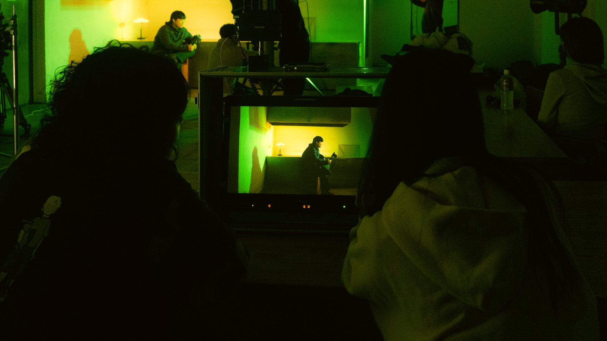
ONLINE CLASS
기획부터 촬영까지,
프리프로덕션의 모든 것
현장에서 10년 이상 쌓은 노하우를 온라인으로. 시간과 장소에 구애받지 않고, 필요한 회차만 골라 반복해서 볼 수 있습니다.
무료 미리보기
결제 전에
한 회차 먼저 보세요
「4-1. 목적에 맞는 카메라 선택」 10분 22초를 무료로 공개합니다. 강의 방식이 나와 맞는지 확인하고 결정하시면 됩니다.
온라인 클래스는 이런 분께
기획이 늘 막히는 분
카메라와 편집보다 먼저 배워야 할 건 기획입니다. 설득력 있는 기획서를 쓰는 법부터 다룹니다.
현장에 나가기 전인 분
촬영 현장이 어떻게 돌아가는지, 무엇을 준비해야 하는지 미리 익히고 갈 수 있습니다.
오프라인 수강이 어려운 분
지역이나 일정 때문에 합정 오프라인 수업이 어려우신 분도 같은 내용을 들을 수 있습니다.
커리큘럼
8개 챕터 · 24개 세션 · 총 4시간 37분
챕터를 누르면 세션 목록이 열립니다. 수강 기간 제한이 없어 언제든 다시 볼 수 있고, 필요한 회차만 골라 들을 수 있습니다.
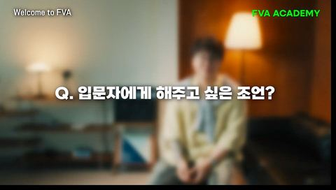
0
Welcome to FVA
1개 세션
- 0Welcome to FVA07:38
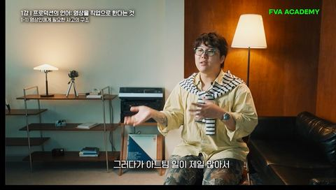
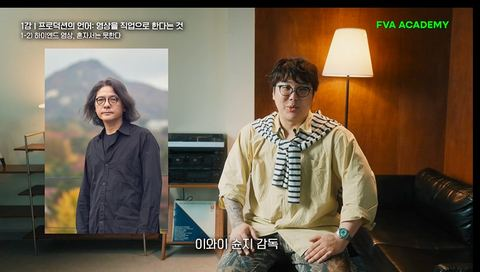
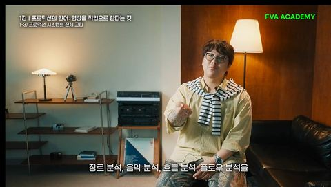
1
프로덕션의 언어: 영상을 직업으로 한다는 것
3개 세션
- 1-1영상인에게 필요한 사고의 구조14:52
- 1-2하이엔드 영상, 혼자서는 못한다13:24
- 1-3프로덕션 시스템의 전체 그림12:44
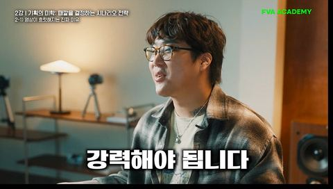
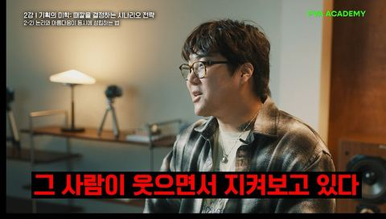
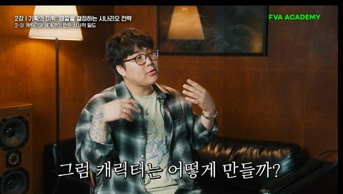
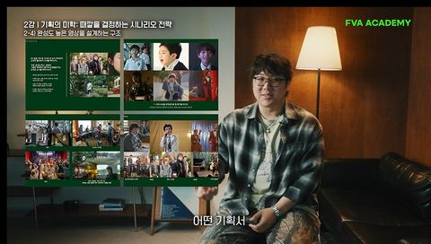
2
기획의 미학: 때깔을 결정하는 시나리오 전략
4개 세션
- 2-1영상이 흐릿해지는 진짜 이유09:51
- 2-2논리와 아름다움이 동시에 성립하는 법09:26
- 2-3캐릭터와 세계관이 만든 서사적 밀도11:28
- 2-4완성도 높은 영상을 설계하는 구조11:05
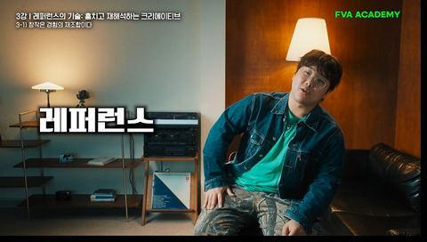
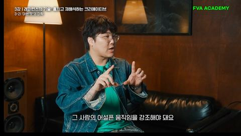
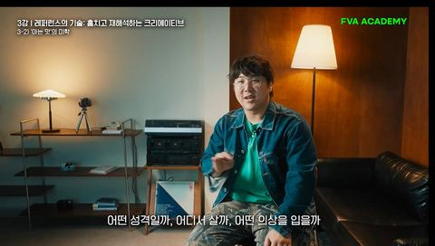
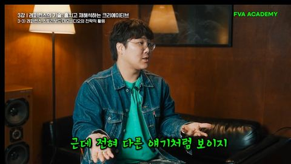
3
레퍼런스의 기술: 훔치고 재해석하는 크리에이티브
3개 세션
- 3-1창작은 경험의 재조합이다08:33
- 3-2‘아는 맛’의 미학10:21
- 3-3레퍼런스·스토리보드·데모비디오의 전략적 활용08:33
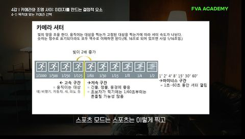
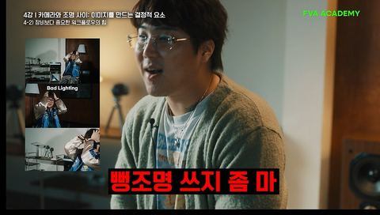
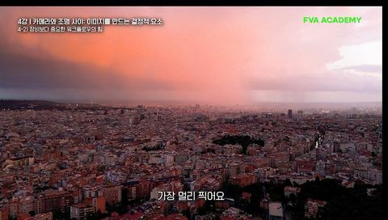
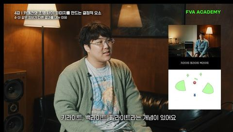
4
카메라와 조명 사이: 이미지를 만드는 결정적 요소
3개 세션
- 4-1목적에 맞는 카메라 선택무료 미리보기10:22
- 4-2장비보다 중요한 워크플로우의 힘14:45
- 4-3같은 장비가 다른 결과를 내는 이유07:55
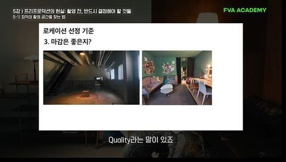
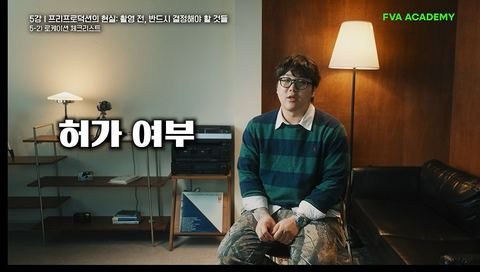
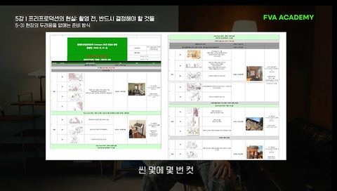
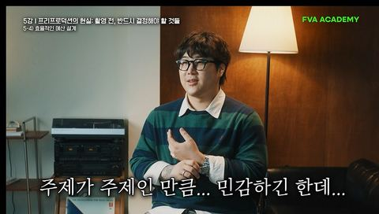
5
프리프로덕션의 현실: 촬영 전, 반드시 결정해야
3개 세션
- 5-1최적의 촬영 공간을 찾는 법12:27
- 5-2로케이션 체크리스트14:11
- 5-3현장의 두려움을 없애는 준비 방식09:23
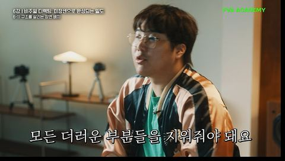
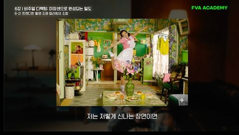
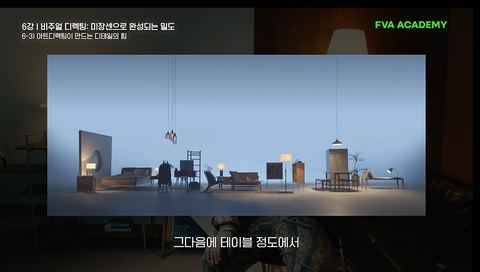
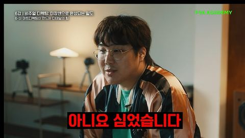
6
비주얼 디렉팅: 미장센으로 완성되는 밀도
3개 세션
- 6-1구조를 살리는 장면 배치10:32
- 6-2트렌디한 촬영·조명·컬러링의 조합14:38
- 6-3아트디렉팅이 만드는 디테일의 힘13:25
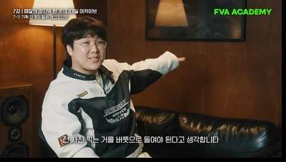
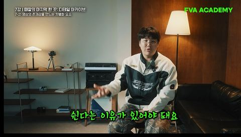
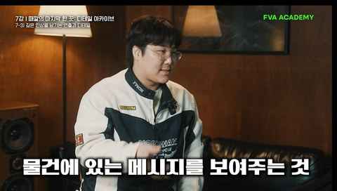
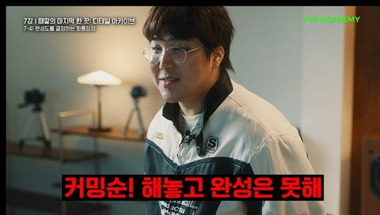
7
때깔의 마지막 한 끗: 디테일 아카이브
4개 세션
- 7-1기획 단계의 필수 체크포인트09:18
- 7-2영상의 존재감을 만드는 차별화 요소13:05
- 7-3깊은 인상을 남기는 연출과 디테일15:57
- 7-4완성도를 결정하는 화룡점정13:37
강사
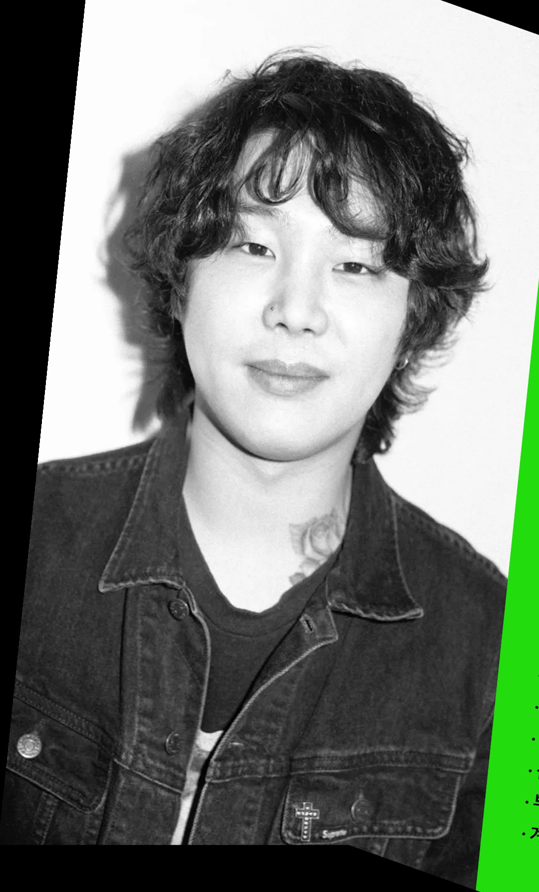
정주 감독 — 현역 뮤직비디오·광고 연출
영화를 좋아하던 학생에서 글로벌 프로젝트를 이끄는 디렉터까지. 전공자가 아닌 현장 스태프로 시작해 국내외 기업 광고와 뮤직비디오를 연출하는 단계까지 성장해왔습니다.
연출·비주얼 디렉팅·촬영 등 여러 포지션을 넘나들며 10년 이상 현장에서 축적한 경험을 바탕으로, 실제 프로덕션에서만 얻을 수 있는 날 것의 노하우를 24개 세션에 담았습니다. 외부 강사를 돌려쓰지 않고 24개 세션 전부를 한 사람이 직접 강의합니다.
- 뮤직비디오 연출
- 브랜드 광고 연출
- 비주얼 디렉팅
- 현장 경력 10년 이상
- FVA 아카데미 대표 강사
수강생 후기
4.99／ 5.0 · 실수강생 후기 134건
아래 후기는 FVA 오프라인 과정 수강생이 남긴 것입니다. 온라인 클래스는 같은 강사가 같은 기획 방법론을 다루지만, 온라인 수강생 후기는 아직 모으는 중입니다.
★★★★★
영상에 관심은 늘 있었지만 어떻게 시작해야 할지 몰라서 고민하다가, 휴학하고 나서 '이 기간에 뭐라도 해보자' 싶어서 등록했습니다. 다니면서 느낀 건, 예전엔 영상은 카메라가 9할이라고 생각했는데 피바에서는 기획의 중요성을 정말 강조해요. 기획이 좋으면 어떤 카메라를 쓰든 좋은 작품이 나온다고 하는데, 듣고 나서 시각이…
★★★★★
이제 첫달 마무리했는데 영상에서 가장 기본적인 기획 단계를 깊게 배울 수 있어 좋았어요. 무엇보다 기획 없이는 깊이 있는 영상이 나오기 어렵다는 걸 새삼 느꼈는데요. 어떤 메세지를, 어떤 장치를 통해 전달할 지 2,3달차 수업 빨리 듣고 영상에 적용해보고 싶어졌어요. 그리고 매주 과제가 있는데 과제를 하는 만큼 실력이 느…
★★★★★
영상을 전공하긴 하고 있지만, 각 과정마다 현업에서의 활용법을 알고 싶고, 연출 분야에 대해서 더 깊게 배우고 싶었는데 레퍼런스가 왜 필요하고 어떻게 활용해야 하는지 등 제대로 된 방법에 대해서 배울 수 있어서 정말 좋습니다! 특히 매주 감독님께서 기획안을 피드백 해주시는 것이 정말 큰 도움이 되고, 저의 작품을 만들 수…
자주 묻는 질문
온라인 강의는 몇 개 세션이고 총 얼마나 되나요?
8개 챕터 24개 세션, 총 4시간 37분입니다. 「4-1. 목적에 맞는 카메라 선택」은 결제 전에도 무료로 미리 보실 수 있습니다.
수강 기간이 정해져 있나요?
아니요. 수강 기간 제한이 없습니다. 한 번 결제하시면 기간 제한 없이 무제한 반복 수강하실 수 있습니다.
휴대폰으로도 볼 수 있나요?
네. 별도 앱 설치 없이 휴대폰 브라우저에서 바로 시청하실 수 있습니다. PC·태블릿·모바일 모두 같은 계정으로 이어서 보실 수 있습니다.
환불이 가능한가요?
강의를 재생하기 전이라면 환불이 가능합니다. 다만 강의를 한 번이라도 재생하신 뒤에는 환불이 어렵습니다. 영상 콘텐츠 특성상 열람과 동시에 제공이 완료되기 때문입니다. 결제 전 무료 미리보기 세션으로 강의 방식을 먼저 확인해보시길 권합니다.
편집 프로그램 사용법도 배우나요?
아니요. 이 강의는 프리프로덕션, 즉 촬영에 들어가기 전 단계를 다룹니다. 기획과 시나리오, 레퍼런스 활용, 카메라·조명 선택 기준, 로케이션과 현장 준비, 비주얼 디렉팅까지가 범위입니다. 편집툴 조작법은 포함되어 있지 않습니다.
영상을 처음 하는 비전공자도 들을 수 있나요?
네. 장비나 편집 경험이 없어도 따라올 수 있도록 「영상인에게 필요한 사고의 구조」부터 시작합니다. 카메라를 먼저 사는 대신 기획을 먼저 배우는 순서로 구성돼 있습니다.
오프라인 과정과 무엇이 다른가요?
온라인은 프리프로덕션 이론을 언제 어디서나 반복해서 듣는 과정입니다. 오프라인 12주 과정은 시네마 장비로 실제 촬영 현장을 만들고 팀을 꾸려 포트폴리오 작품까지 완성합니다. 오프라인 강의 소개와 커리큘럼에서 확인하실 수 있습니다.
결제는 어디서 하나요?
신청·결제와 강의 시청은 모두 FVA 수강 페이지에서 진행됩니다. 위의 「수강 신청하기」 버튼으로 이동하시면 됩니다. 궁금한 점은 카카오 채널로 문의해주세요.